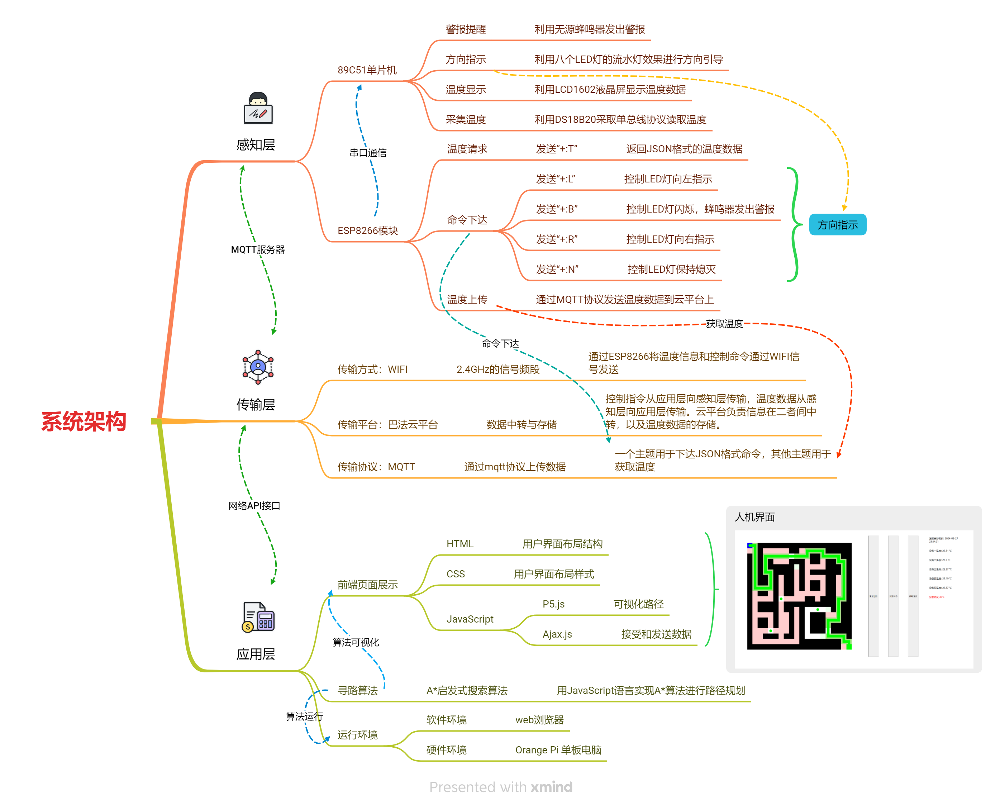
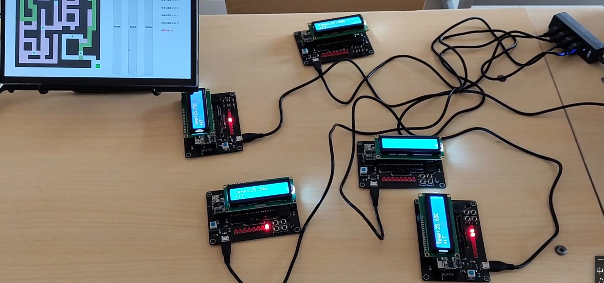
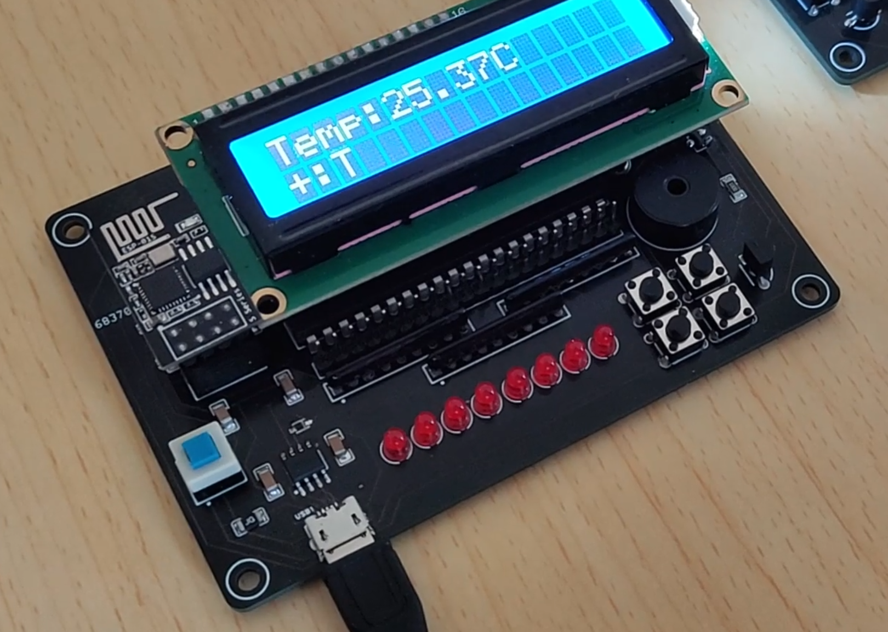
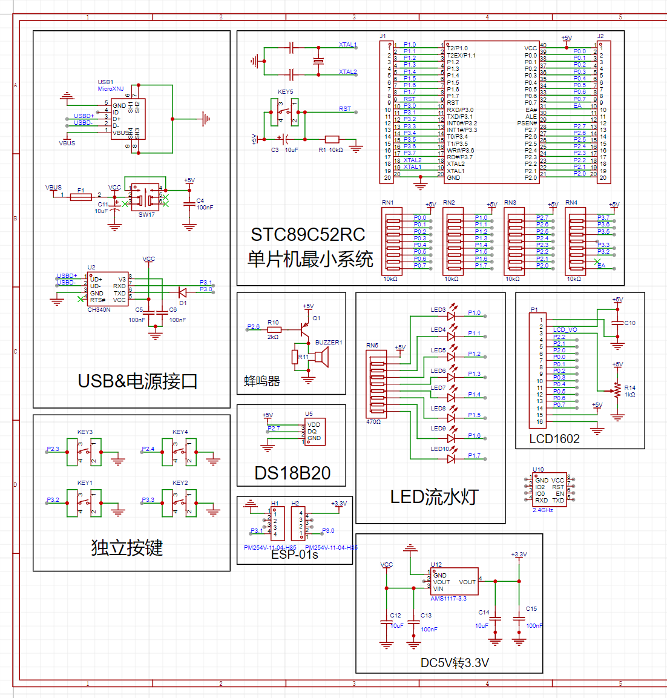
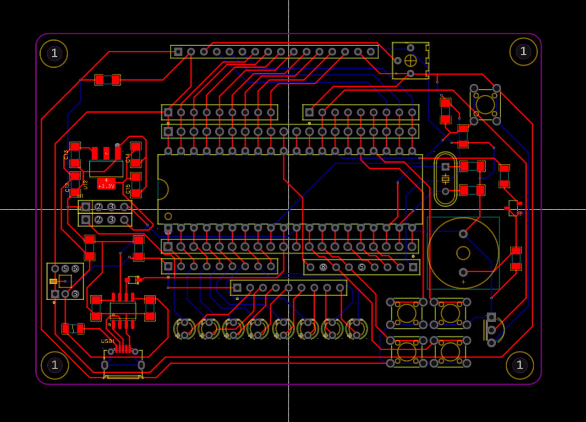
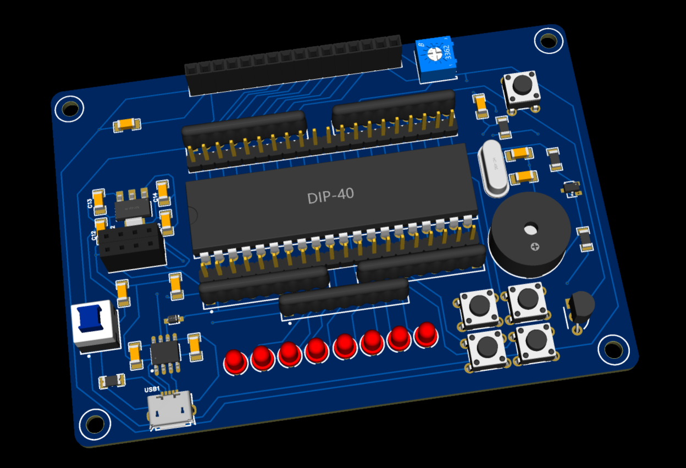
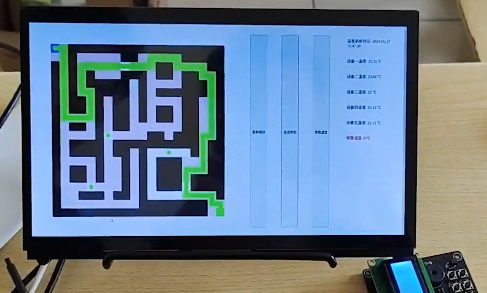
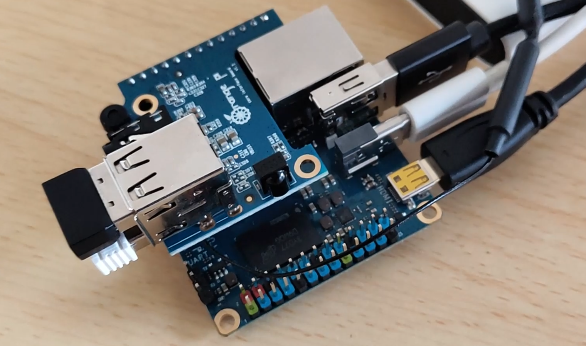

随着城市化进程的加快，高层建筑、大型商业综合体等复杂建筑结构的增多，火灾安全问题日益凸显。
传统的火灾逃生指示往往依赖于静态的疏散标志，这在实际紧急情况下可能无法提供最有效的逃生路径。因此，研发一套能够实时响应火情变化、智能化引导人员安全逃生的系统具有重要的现实意义和紧迫性。火灾智能逃生寻路系统的研发，正是基于这一背景，旨在通过技术创新提升火灾应急疏散的效率和安全性。
火场中，传统的静态逃生指示牌与动态逃生指示牌之间存在显著的差异，这些差异在紧急情况下可能直接影响疏散效果和人员安全。以下是对这两种指示牌的竞品分析：
| 产品 | 类型 | 优点 | 缺点 | 适用场景 |
|---|---|---|---|---|
| 该项作品 | 动态逃生指示牌 | 实时动态指示：能够根据火场实际情况动态调整指示方向，引导人员远离灾害中心。 与消防系统联动：能够实时接收消防系统的信息，显示火灾位置、疏散路线等关键信息，为逃生者提供准确指引。 提高疏散效率：通过动态指示，可以减少逃生者的混乱和恐慌，提高疏散速度和效率。 独立供电系统：通常配备有备用电源，确保在外部电源失效的情况下仍能正常工作。 | 成本较高：相比静态指示牌，动态指示牌的制作、安装和维护成本较高。 技术复杂度：需要较高的技术支持和维护水平，以确保其稳定性和可靠性。 | 适用于火灾风险较高、建筑结构复杂、人员密集的场所，如大型购物中心、医院、学校等。 |
| 竞品作品 | 静态逃生指示牌 | 简洁明了：设计通常较为简单，通过箭头或文字直接指示安全出口的方向，使人员能够迅速识别。 成本低廉：相比动态指示牌，静态指示牌的制作和安装成本较低。 | 方向固定：无法根据火场实际情况动态调整指示方向，可能导致人员选择错误的逃生路径。 无法实时反映火场信息：无法与消防系统实时联动，无法提供火灾位置、疏散路线等关键信息。 可能产生误导：当火灾发生在指示方向时，逃生者可能误以为该方向是安全的，从而陷入危险。 依赖外部光源：在火场中，烟雾和火势可能导致外部光源失效，使指示牌失去作用。 | 适用于火灾风险较低、建筑结构相对简单的场所，如小型商业场所、办公楼等。 |
随着科技的进步和人们对安全疏散要求的提高，动态逃生指示牌的市场需求逐渐增加。未来，随着技术的进一步成熟和成本的降低，动态逃生指示牌有望在更多场所得到应用。同时，对于静态逃生指示牌的改进和创新也将持续进行，以满足不同场所和需求的疏散要求。
医院：医院作为人员密集且可能存在紧急情况的场所，动态逃生指示牌能够实时反映火场情况，为患者、医护人员及访客提供准确的疏散方向。
购物中心：动态指示牌能够迅速调整疏散路线，帮助顾客和工作人员快速找到安全出口。
体育场馆：在举办大型活动时，体育场馆内人数众多，且可能存在视线不佳、人员混乱等问题。动态指示牌能够通过实时指示，确保人员有序疏散。
学校：动态逃生指示牌能够为学生提供清晰的疏散指引，减少恐慌和混乱。
办公楼：动态指示牌能够实时反映火场情况，为员工提供最佳的逃生路径。
老年人和儿童：老年人和儿童在紧急情况下可能更容易产生恐慌和混乱。动态指示牌提供的清晰、明确的疏散指引能够减少他们的不安，提高疏散效率。
消防管理部门：动态逃生指示牌能够实时反映火场情况，为消防管理部门提供准确的疏散信息，有助于他们制定有效的救援方案，提高救援效率。
动态指示方向：根据火灾或其他紧急情况的发生位置和人员疏散情况，实时调整指示方向，确保人员能够沿着最优的逃生路径撤离。
实时信息传递：可以与消防报警系统联动，实时显示火灾位置、疏散路线等信息，帮助人员快速了解当前情况。
视觉导航功能：通过视觉导航指示出一条安全的逃生路径，能够为被困人员进行视觉引导，确保他们能够快速、安全地撤离至安全区域。
独立供电系统：配备有备用电源或独立供电系统，确保在外部电源失效的情况下仍能正常工作。
人机交互优化：得益于网页前端技术跨平台的特性，系统能够在多端(Windows、Linux、 Android、iOS、Harmony)对逃生人员进行有效引导，降低了因恐慌和混 乱导致的二次伤害风险。
可靠性：采用高可靠性的电子元器件和算法，确保在紧急情况下能够正常工作。
稳定性：经过严格的测试和验证，确保在各种环境条件下都能稳定运行。
耐用性：采用优质的材料和工艺制造，具有较长的使用寿命和维护周期。
易用性：界面简洁明了，操作方便，无需专业培训即可使用。

火场护航——基于A* 算法的物联网火灾逃生路线引导系统是一套集成传感器技术、嵌入式技术、物联网技术、网页前端技术、人工智能算法等多项先进技术的 智能化系统。该系统能够在火灾发生时，实时监测火势蔓延情况、记录温度变化等关键参数，并通过中央控制单元迅速计算出最佳逃生路线。同时，系统配备的智能 导航功能能够为被困人员进行视觉引导，确保他们能够快速、安全地撤离至安全区域。

实物运行中的图片

温度采集和视觉引导装置
利用无源蜂鸣器发出警报
1while (t < 5000)2{3 FM = !FM;4 Delay5us(100);//每隔500微秒发一次声音，一共持续2.5秒5 t++;6}7t = 0;利用八个LED灯的流水灯效果进行方向引导
xxxxxxxxxx351if (State == 'N')//正常状态不亮2{3 P1 = 0x00;4}5if (State == 'R')//指示灯向右6{7 P1 = 0xfe;8 delay_ms(100);9 for (a = 1; a <= 7; a++)10 {11 P1 = P1 << 1 | 0x01;12 delay_ms(100);13 if (State != 'R')14 break;15 }16}17if (State == 'L')//指示灯向左18{19 P1 = 0x7f;20 delay_ms(100);21 for (a = 1; a <= 7; a++)22 {23 P1 = P1 >> 1 | 0x80;24 delay_ms(100);25 if (State != 'L')26 break;27 }28}29if (State == 'B')//指示灯闪烁30{31 P1 = 0xff;32 delay_ms(300);33 P1 = 0x00;34 delay_ms(300);35}利用LCD1602液晶屏显示温度数据
x1//引脚配置：2sbit LCD_RS=P2^2;3sbit LCD_RW=P2^1;4sbit LCD_EN=P2^0;5
6
8void LCD_WriteCommand(unsigned char Command)9{10 LCD_RS=0;11 LCD_RW=0;12 LCD_DataPort=Command;13 LCD_EN=1;14 Delay(1);15 LCD_EN=0;16 Delay(1);17}18
19void LCD_Init()20{21 LCD_WriteCommand(0x38);//八位数据接口，两行显示，5*7点阵22 LCD_WriteCommand(0x0c);//显示开，光标关，闪烁关23 LCD_WriteCommand(0x01);//光标复位，清屏24}25
26void LCD_WriteData(unsigned char Data)27{28 LCD_RS=1;29 LCD_RW=0;30 LCD_DataPort=Data;31 LCD_EN=1;32 Delay(1);33 LCD_EN=0;34 Delay(1);35}36
37void LCD_SetCursor(unsigned char Line,unsigned char Column)38{39 if(Line==1)40 {41 LCD_WriteCommand(0x80|(Column-1));42 }43 else if(Line==2)44 {45 LCD_WriteCommand(0x80|(Column-1+0x40));46 }47}48
49void LCD_ShowString(unsigned char Line,unsigned char Column,char *String)50{51 unsigned char i;52 LCD_SetCursor(Line,Column);53 for(i=0;String[i]!='\0';i++)54 {55 LCD_WriteData(String[i]);56 }57}利用DS18B20采取单总线协议读取温度
xxxxxxxxxx441sbit DS18B20_IO = P2^7;2
3bit InitDS18B20ACK()4{5 bit ACK; // 用来判断DS18B20是否初始化成功6 EA = 0;7 DS18B20_IO = 0;8 Delay5us(120);9 DS18B20_IO = 1;10 Delay5us(10);11 ACK = DS18B20_IO;12 while (!DS18B20_IO)13 ; // 等待脉冲结束14 EA = 1;15 return ACK;16}17
18bit startDs18b20()19{20 bit ACK;21 ACK = InitDS18B20ACK(); // 总线初始化是否完成22 if (ACK == 0)23 {24 writeToDs18b20(0xcc); // 跳过ROM的验证操作25 writeToDs18b20(0x44); // 启动温度的转换26 }27 return ACK; // ACK == 0 启动成功，1就不成功28}29
30bit getTempForDs18b20(int *temp)31{32 bit ACK;33 uchar MSB, LSB;34 ACK = InitDS18B20ACK();35 if (ACK == 0)36 {37 writeToDs18b20(0xcc); // 跳过ROM的验证操作38 writeToDs18b20(0xbe); // 发送一个读取的命令39 LSB = readeToDs18b20();//读低八位数据40 MSB = readeToDs18b20();//读高八位数据41 *temp = ((int)MSB << 8) + LSB;//温度换算42 }43 return ACK;44}
PCB原理图

PCB走线图

PCB渲染图
xxxxxxxxxx11Serial.print("+:T\n"); //发送“+:T”xxxxxxxxxx11data = "{\"temp\":0}"; //返回JSON格式的温度数据xxxxxxxxxx161void callback(char* topic, byte* payload, unsigned int length) {2 String msg = "";3 for (int i = 0; i < length; i++) {4 msg += (char)payload[i];5 }6 if (msg.indexOf("\"Status5\":\"R\"") > 0) {7 Serial.print("+:R\n");//发送“+:R” 控制LED灯向右指示8 } else if (msg.indexOf("\"Status5\":\"B\"") > 0) {9 Serial.print("+:B\n");//发送“+:B” 控制LED灯闪烁，蜂鸣器发出警报10 } else if (msg.indexOf("\"Status5\":\"L\"") > 0) {11 Serial.print("+:L\n");//发送“+:L” 控制LED灯向左指示12 } else if (msg.indexOf("\"Status5\":\"N\"") > 0) {13 Serial.print("+:N\n");//发送“+:N” 控制LED灯保持熄灭14 }15 msg = "";16}通过MQTT协议发送温度数据到云平台上
xxxxxxxxxx111const char* mqtt_server = "bemfa.com"; //默认，MQTT服务器2const int mqtt_server_port = 9501; //默认，MQTT服务器3WiFiClient espClient;4PubSubClient client(espClient);5
6long now = millis();7if (now - lastMsg > 5000) { //5秒推送一次8 lastMsg = now;9 client.publish(topic, data.c_str()); //推送温度数据到MQTT服务器 10 Serial.print("+:T\n"); //发送温度请求11}
WIFI通信:通过ESP8266将温度信息和控制命令通过2.4GHz的信号频段的WIFI信号发送给单片机
巴法云平台:功能是进行数据中转与存储。控制指令从应用层向感知层传输，温度数据从感知层向应用层传输。云平台负责信息在二者间中转，以及温度数据的存储。
巴法云平台存储温度数据
MQTT协议:通过MQTT协议上传数据。一个“Control“主题用于下达JSON格式命令，其他“TempX”主题用于获取温度。
巴法云平台MQTT服务器的订阅主题

用户交互界面
用户界面布局结构。包括有A*算法引导路线的可视化窗口、调试按钮和传感器采集的温度数据。
xxxxxxxxxx371<body>2 <div style="display: flex">3 <!--A*寻路算法可视化界面-->4 <div id="window" style="margin: 5%"></div>5 <!--重新规划按钮-->6 <input7 type="button"8 onclick="javascript:location.reload();"9 value="重新规划"10 style="margin: 2%"11 />12 <!--发送状态按钮-->13 <input14 type="button"15 onclick="sendMsg()"16 value="发送状态"17 style="margin: 2%"18 />19 <!--获取温度按钮-->20 <input21 type="button"22 onclick="getTemp()"23 value="获取温度"24 style="margin: 2%"25 />26 <!--获取温度信息展示-->27 <div style="display: list">28 <div id="Time" style="margin: 40px">温度更新时间:</div>29 <div id="box1" style="margin: 40px">设备一温度:</div>30 <div id="box2" style="margin: 40px">设备二温度:</div>31 <div id="box3" style="margin: 40px">设备三温度:</div>32 <div id="box4" style="margin: 40px">设备四温度:</div>33 <div id="box5" style="margin: 40px">设备五温度:</div>34 <div style="color: red; margin: 40px">报警温度:30℃</div>35 </div>36 </div>37 </body>
用JavaScript语言实现A*算法，并通过P5.js可视化逃生路径。
xxxxxxxxxx3351function removeFromArray(arr, elt) {2 for (var i = arr.length - 1; i >= 0; i--) {3 if (arr[i] == elt) {4 arr.splice(i, 1);5 }6 }7}8
9function heuristic(a, b) {10 var Manhattan_Distance = abs(a.i - b.i) + abs(a.j - b.j);11 return Manhattan_Distance;12}13
14var cols = 20;15var rows = 20;16
17var grid = new Array(cols);18
19var openSet = [];20var closedSet = [];21
22var start;23var end;24
25var fire1;26var fire2;27var fire3;28var fire4;29var fire5;30
31var w, h;32var isFinsh = false;33var path = [];34
35//初始化墙体36var wall = [37 [0, 0, 0, 0, 0, 0, 0, 0, 0, 0, 0, 0, 0, 0, 0, 0, 0, 0, 0, 0],38 [0, 0, 0, 0, 0, 0, 0, 0, 0, 0, 0, 0, 0, 0, 0, 0, 0, 0, 0, 0],39 [0, 0, 0, 0, 0, 0, 0, 0, 0, 0, 0, 0, 0, 0, 0, 0, 0, 0, 0, 0],40 [0, 0, 0, 0, 0, 0, 0, 0, 0, 0, 0, 0, 0, 0, 0, 0, 0, 0, 0, 0],41 [0, 0, 0, 0, 0, 0, 0, 0, 0, 0, 0, 0, 0, 0, 0, 0, 0, 0, 0, 0],42 [0, 0, 0, 0, 0, 0, 0, 0, 0, 0, 0, 0, 0, 0, 0, 0, 0, 0, 0, 0],43 [0, 0, 0, 0, 0, 0, 0, 0, 0, 0, 0, 0, 0, 0, 0, 0, 0, 0, 0, 0],44 [0, 0, 0, 0, 0, 0, 0, 0, 0, 0, 0, 0, 0, 0, 0, 0, 0, 0, 0, 0],45 [0, 0, 0, 0, 0, 0, 0, 0, 0, 0, 0, 0, 0, 0, 0, 0, 0, 0, 0, 0],46 [0, 0, 0, 0, 0, 0, 0, 0, 0, 0, 0, 0, 0, 0, 0, 0, 0, 0, 0, 0],47 [0, 0, 0, 0, 0, 0, 0, 0, 0, 0, 0, 0, 0, 0, 0, 0, 0, 0, 0, 0],48 [0, 0, 0, 0, 0, 0, 0, 0, 0, 0, 0, 0, 0, 0, 0, 0, 0, 0, 0, 0],49 [0, 0, 0, 0, 0, 0, 0, 0, 0, 0, 0, 0, 0, 0, 0, 0, 0, 0, 0, 0],50 [0, 0, 0, 0, 0, 0, 0, 0, 0, 0, 0, 0, 0, 0, 0, 0, 0, 0, 0, 0],51 [0, 0, 0, 0, 0, 0, 0, 0, 0, 0, 0, 0, 0, 0, 0, 0, 0, 0, 0, 0],52 [0, 0, 0, 0, 0, 0, 0, 0, 0, 0, 0, 0, 0, 0, 0, 0, 0, 0, 0, 0],53 [0, 0, 0, 0, 0, 0, 0, 0, 0, 0, 0, 0, 0, 0, 0, 0, 0, 0, 0, 0],54 [0, 0, 0, 0, 0, 0, 0, 0, 0, 0, 0, 0, 0, 0, 0, 0, 0, 0, 0, 0],55 [0, 0, 0, 0, 0, 0, 0, 0, 0, 0, 0, 0, 0, 0, 0, 0, 0, 0, 0, 0],56 [0, 0, 0, 0, 0, 0, 0, 0, 0, 0, 0, 0, 0, 0, 0, 0, 0, 0, 0, 0]57];58
59//设置一号墙体60var wall_1 = [61 [0, 0, 1, 1, 1, 1, 1, 0, 1, 0, 0, 0, 0, 1, 0, 1, 1, 1, 1, 1],62 [1, 0, 0, 0, 0, 1, 1, 0, 1, 1, 0, 1, 1, 1, 0, 1, 1, 0, 1, 1],63 [1, 1, 1, 0, 0, 0, 0, 0, 0, 0, 0, 0, 1, 1, 0, 0, 0, 0, 1, 1],64 [0, 1, 0, 0, 1, 0, 1, 0, 1, 1, 1, 0, 1, 1, 0, 1, 0, 0, 0, 1],65 [0, 1, 1, 0, 1, 1, 1, 1, 1, 0, 1, 0, 0, 1, 0, 1, 1, 1, 0, 1],66 [0, 0, 1, 0, 0, 1, 1, 1, 1, 0, 1, 0, 1, 1, 0, 1, 1, 0, 1, 1],67 [0, 0, 1, 1, 0, 1, 0, 1, 0, 0, 0, 0, 0, 0, 0, 0, 0, 0, 0, 1],68 [1, 0, 1, 1, 0, 1, 0, 1, 1, 0, 0, 0, 1, 1, 1, 1, 1, 0, 1, 1],69 [1, 0, 0, 0, 0, 1, 0, 1, 1, 0, 1, 0, 1, 1, 0, 1, 1, 0, 1, 1],70 [0, 0, 1, 1, 1, 1, 0, 1, 1, 0, 0, 0, 0, 0, 0, 0, 1, 0, 1, 1],71 [1, 0, 0, 0, 0, 0, 0, 0, 0, 0, 0, 1, 1, 1, 1, 1, 1, 0, 0, 0],72 [1, 0, 1, 1, 1, 1, 0, 0, 1, 1, 1, 1, 1, 0, 1, 1, 1, 0, 1, 0],73 [1, 0, 1, 1, 0, 1, 1, 0, 0, 0, 0, 0, 0, 0, 0, 1, 1, 0, 1, 0],74 [1, 0, 1, 0, 0, 1, 1, 0, 1, 0, 1, 1, 0, 1, 0, 0, 0, 0, 1, 0],75 [0, 0, 1, 1, 0, 1, 1, 0, 1, 0, 1, 1, 0, 1, 0, 0, 0, 0, 1, 0],76 [1, 0, 1, 1, 0, 1, 0, 0, 1, 0, 1, 0, 0, 1, 1, 0, 1, 1, 1, 0],77 [1, 0, 0, 0, 0, 0, 0, 0, 1, 0, 1, 0, 1, 1, 1, 0, 1, 1, 1, 0],78 [0, 1, 0, 1, 1, 1, 0, 1, 1, 0, 1, 0, 0, 0, 0, 0, 0, 0, 0, 0],79 [1, 1, 0, 1, 0, 1, 0, 1, 0, 0, 1, 1, 1, 1, 0, 1, 1, 0, 1, 0],80 [1, 1, 0, 0, 0, 0, 0, 1, 0, 0, 0, 0, 1, 0, 0, 0, 1, 0, 0, 0]81];82
83//设置二号墙体84var wall_2 = [85 [0, 0, 1, 1, 1, 1, 1, 1, 1, 1, 1, 1, 1, 1, 1, 1, 1, 1, 1, 1],86 [0, 0, 1, 0, 0, 0, 0, 0, 1, 1, 0, 0, 0, 0, 0, 1, 1, 1, 1, 1],87 [1, 0, 1, 0, 0, 0, 0, 0, 0, 0, 0, 0, 1, 1, 0, 0, 0, 0, 1, 1],88 [1, 0, 1, 0, 1, 0, 0, 0, 1, 1, 1, 0, 1, 1, 0, 1, 1, 0, 0, 1],89 [1, 0, 1, 0, 1, 1, 1, 1, 1, 0, 1, 0, 0, 0, 0, 1, 1, 1, 0, 1],90 [1, 0, 1, 0, 0, 1, 1, 1, 1, 0, 1, 0, 1, 1, 1, 1, 1, 1, 0, 1],91 [1, 0, 1, 1, 0, 1, 0, 1, 1, 0, 1, 0, 0, 0, 0, 1, 1, 0, 0, 1],92 [1, 0, 1, 1, 0, 1, 0, 1, 1, 0, 1, 0, 1, 1, 0, 1, 1, 0, 0, 1],93 [1, 0, 0, 0, 0, 1, 0, 1, 1, 0, 1, 0, 1, 1, 0, 1, 1, 0, 0, 1],94 [1, 0, 1, 1, 0, 1, 0, 1, 1, 0, 0, 0, 0, 0, 0, 1, 1, 0, 0, 1],95 [1, 0, 0, 0, 0, 1, 0, 0, 0, 0, 0, 1, 1, 0, 1, 1, 1, 0, 0, 1],96 [1, 0, 1, 1, 1, 1, 0, 1, 1, 1, 1, 1, 1, 1, 1, 1, 1, 0, 1, 1],97 [1, 0, 1, 1, 1, 1, 0, 1, 1, 0, 1, 0, 0, 0, 0, 0, 1, 0, 1, 1],98 [1, 0, 0, 0, 0, 1, 0, 0, 1, 0, 1, 0, 1, 1, 1, 0, 0, 0, 1, 1],99 [1, 0, 1, 1, 0, 1, 0, 0, 1, 0, 1, 0, 1, 1, 1, 0, 0, 0, 1, 1],100 [1, 0, 1, 1, 0, 1, 0, 0, 1, 0, 1, 0, 1, 1, 1, 0, 1, 1, 1, 1],101 [1, 0, 0, 0, 0, 0, 0, 0, 1, 0, 1, 0, 1, 1, 1, 0, 1, 1, 1, 1],102 [1, 0, 0, 1, 1, 1, 0, 1, 1, 0, 1, 0, 0, 0, 0, 0, 0, 0, 0, 1],103 [1, 0, 0, 0, 0, 0, 0, 0, 0, 0, 1, 1, 1, 1, 1, 1, 1, 1, 0, 0],104 [1, 1, 1, 1, 1, 1, 1, 1, 1, 1, 1, 1, 1, 1, 1, 1, 1, 1, 0, 0]105];106
107var start_x = 0;108var start_y = 0;109var end_x = rows - 1;110var end_y = cols - 1;111
112var fire1_x = 8;113var fire1_y = 2;114var fire2_x = 6;115var fire2_y = 10;116var fire3_x = 13;117var fire3_y = 12;118var fire4_x = 4;119var fire4_y = 16;120var fire5_x = 15;121var fire5_y = 16;122
123//设置着火点124function setFire(point, x, y) {125 point = grid[x][y];126 point.set = true;127 point.status = 'B';128 point.wall = true;129}130
131//取消着火点132function setNoFire(point, x, y) {133 point = grid[x][y];134 point.set = true;135 point.status = 'N';136 point.wall = false;137}138
139//提前获取温度数据140function preload() {141 getTemp();142 // wall = wall_1;143 wall = wall_2;//选择二号地图144}145
146
147//初始化函数148function setup() {149 console.log('START A*');150 let divElement = document.getElementById("window");151 let canvas = createCanvas(700, 700);;152 canvas.parent(divElement);153 canvas.style("display", "block");154
155
156 w = width / cols;157 h = height / rows;158
159 for (var i = 0; i < cols; i++) {160 grid[i] = new Array(rows);161 }162 163//实例化监控点164 for (var i = 0; i < cols; i++) {165 for (var j = 0; j < rows; j++) {166 grid[i][j] = new Spot(i, j);167 }168 }169 170//添加相邻点171 for (var i = 0; i < cols; i++) {172 for (var j = 0; j < rows; j++) {173 grid[i][j].addNeighbors(grid);174 }175 }176
177//初始化墙体178 for (var i = 0; i < cols; i++) {179 for (var j = 0; j < rows; j++) {180 grid[i][j].wall = wall[j][i];181 }182 }183
184 start = grid[start_x][start_y];185 end = grid[end_x][end_y];186
187 start.wall = false;188 end.wall = false;189
190 openSet.push(start);191}192
193//算法开始运行194function draw() {195//判断是否着火196 (public_Temp1 > 30) ? setFire(fire1, fire1_x, fire1_y) : setNoFire(fire1, fire1_x, fire1_y);197 (public_Temp2 > 30) ? setFire(fire2, fire2_x, fire2_y) : setNoFire(fire2, fire2_x, fire2_y);198 (public_Temp3 > 30) ? setFire(fire3, fire3_x, fire3_y) : setNoFire(fire3, fire3_x, fire3_y);199 (public_Temp4 > 30) ? setFire(fire4, fire4_x, fire4_y) : setNoFire(fire4, fire4_x, fire4_y);200 (public_Temp5 > 30) ? setFire(fire5, fire5_x, fire5_y) : setNoFire(fire5, fire5_x, fire5_y);201
202 if (openSet.length > 0) {203 var winner = 0;204 for (var i = 0; i < openSet.length; i++) {205 if (openSet[i].f < openSet[winner].f) {206 winner = i;207 }208 }209 var current = openSet[winner];210
211 if (current === end) {212 isFinsh = true;213 noLoop();214 console.log('DONE!');215 }216
217 removeFromArray(openSet, current);218 closedSet.push(current);219
220 var neighbors = current.neighbors;221 for (var i = 0; i < neighbors.length; i++) {222 var neighbor = neighbors[i];223
224 if (!closedSet.includes(neighbor) && !neighbor.wall) {225 var tempG = current.g + heuristic(neighbor, current);226
227 var newPath = false;228 if (openSet.includes(neighbor)) {229 if (tempG < neighbor.g) {230 neighbor.g = tempG;231 newPath = true;232 }233 } else {234 neighbor.g = tempG;235 newPath = true;236 openSet.push(neighbor);237 }238
239 if (newPath) {240 neighbor.h = heuristic(neighbor, end);241 neighbor.f = neighbor.g + neighbor.h;242 neighbor.previous = current;243 }244 }245 }246 } else {247 console.log('No Solution');248 noLoop();249 return;250 }251
252 background(255);253
254 for (var i = 0; i < cols; i++) {255 for (var j = 0; j < rows; j++) {256 grid[i][j].show();257 }258 }259
260 for (var i = 0; i < closedSet.length; i++) {261 closedSet[i].show(color(255, 0, 0, 50));262 }263
264 for (var i = 0; i < openSet.length; i++) {265 openSet[i].show(color(0, 255, 0, 20));266 }267
268 path = [];269 var temp = current;270 path.push(temp);271 while (temp.previous) {272 path.push(temp.previous);273 temp = temp.previous;274 }275
276 for (var i = 0; i < path.length; i++) {277 path[i].show(color(0, 255, 0, 90));278 }279 start.show(color(0, 0, 255));280 end.show(color(0, 255, 0));281
282
283 if (isFinsh)284 display_path();285}286
287//显示寻路算法的结果288function display_path() {289 noFill();290 stroke(0, 255, 0);291 strokeWeight(w / 2);292 beginShape();293 for (var i = path.length - 1; i >= 0; i--) {294 vertex(path[i].i * w + w / 2, path[i].j * h + h / 2);295 console.log("(" + path[i].i + "," + path[i].j + ")");296 GetWay(i, fire1_x, fire1_y);297 GetWay(i, fire2_x, fire2_y);298 GetWay(i, fire3_x, fire3_y);299 GetWay(i, fire4_x, fire4_y);300 GetWay(i, fire5_x, fire5_y);301 }302 endShape();303 this.Status1 = grid[fire1_x][fire1_y].status;304 console.log(this.Status1);305 this.Status2 = grid[fire2_x][fire2_y].status;306 console.log(this.Status2);307 this.Status3 = grid[fire3_x][fire3_y].status;308 console.log(this.Status3);309 this.Status4 = grid[fire4_x][fire4_y].status;310 console.log(this.Status4);311 this.Status5 = grid[fire5_x][fire5_y].status;312 console.log(this.Status5);313}314
315//获取路线指示的指令316function GetWay(i, firePoint_x, firePoint_y) {317 if (path[i].i === firePoint_x && path[i].j === firePoint_y) {318 if (path[i - 1].i != path[i].i) {319 if (path[i - 1].i > path[i].i) {320 grid[firePoint_x][firePoint_y].status = 'R'; console.log(grid[firePoint_x][firePoint_y].status);321 }322 else {323 grid[firePoint_x][firePoint_y].status = 'L'; console.log(grid[firePoint_x][firePoint_y].status);324 }325 }326 if (path[i - 1].j != path[i].j) {327 if (path[i - 1].j > path[i].j) {328 grid[firePoint_x][firePoint_y].status = 'L'; console.log(grid[firePoint_x][firePoint_y].status);329 }330 else {331 grid[firePoint_x][firePoint_y].status = 'R'; console.log(grid[firePoint_x][firePoint_y].status);332 }333 }334 }335}通过Ajax.js访问云平台数据，并显示到前端页面上。
xxxxxxxxxx951//接受和发送数据2var public_Temp1 = 0;3var public_Temp2 = 0;4var public_Temp3 = 0;5var public_Temp4 = 0;6var public_Temp5 = 0;7
8var Status1 = "N";9var Status2 = "N";10var Status3 = "N";11var Status4 = "N";12var Status5 = "N";13
14//定义方法15function getTemp() {16 //使用$.ajax()发送异步请求17 $.ajax({18 url: "https://apis.bemfa.com/va/alltopic", // 请求路径19 type: "GET", //请求方式20 data: {21 uid: "60ce8437cee20782e7355a16e6bb6a39",22 type: 1,23 },24 success: function (message) {25 // alert(data);26 let Time = document.querySelector("#Time");27 let box1 = document.querySelector("#box1");28 let box2 = document.querySelector("#box2");29 let box3 = document.querySelector("#box3");30 let box4 = document.querySelector("#box4");31 let box5 = document.querySelector("#box5");32
33 var res = JSON.parse(message);34 var time = res.data[0].time;35 var Temp1 = JSON.parse(res.data[1].msg).Temp;36 var Temp2 = JSON.parse(res.data[2].msg).Temp;37 var Temp3 = JSON.parse(res.data[3].msg).Temp;38 var Temp4 = JSON.parse(res.data[4].msg).Temp;39 var Temp5 = JSON.parse(res.data[5].msg).Temp;40 Time.innerHTML = "温度更新时间: " + time;41 box1.innerHTML = "设备一温度: " + Temp1 + " ℃";42 box2.innerHTML = "设备二温度: " + Temp2 + " ℃";43 box3.innerHTML = "设备三温度: " + Temp3 + " ℃";44 box4.innerHTML = "设备四温度: " + Temp4 + " ℃";45 box5.innerHTML = "设备五温度: " + Temp5 + " ℃";46 public_Temp1 = Temp1;47 public_Temp2 = Temp2;48 public_Temp3 = Temp3;49 public_Temp4 = Temp4;50 public_Temp5 = Temp5;51 console.log("Get Temprature OK!");52 console.log(res);53 }, //响应成功后的回调函数54 error: function () {55 alert("温度获取失败！");56 }, //表示如果请求响应出现错误，会执行的回调函数57 dataType: "text", //设置接受到的响应数据的格式58 });59}60function sendMsg() {61 //使用$.ajax()发送异步请求62 $.ajax({63 url: "https://apis.bemfa.com/va/postmsg", // 请求路径64 type: "POST", //请求方式65 data: {66 uid: "60ce8437cee20782e7355a16e6bb6a39",67 topic: "Control",68 type: 1,69 msg:70 '{"Status1":"' +71 this.Status1 +72 '","Status2":"' +73 this.Status2 +74 '","Status3":"' +75 this.Status3 +76 '","Status4":"' +77 this.Status4 +78 '","Status5":"' +79 this.Status5 +80 '"}',81 },82 header: {83 "Content-Type": "application/x-www-form-urlencoded",84 },85 success: function (message) {86 var res = JSON.parse(message);87 console.log("Send Message OK!");88 console.log(res);89 }, //响应成功后的回调函数90 error: function () {91 alert("发送消息出错！");92 }, //表示如果请求响应出现错误，会执行的回调函数93 dataType: "text", //设置接受到的响应数据的格式94 });95}使用JavaScript语言实现A*算法进行路径规划
xxxxxxxxxx691//定义路径点类2function Spot(i, j) {3 this.i = i;4 this.j = j;5
6 //期望参数7 this.f = 0;8 this.g = 0;9 this.h = 0;10
11 this.neighbors = [];12 this.previous = undefined;13 this.wall = false;14 this.set = false;15 this.status = 'N';16
17 this.show = function (col) {18 if (this.wall && this.status === 'N') {19 fill(0);20 noStroke();21 rect(this.i * w, this.j * h, w, h);22 }23 else if (this.status === 'B' && this.wall && this.set) {24 fill(255, 0, 0);25 noStroke();26 ellipse(this.i * w + w / 2, this.j * h + h / 2, w / 2, h / 2);27 }28 else if (this.status === 'N' && !this.wall && this.set) {29 fill(0, 255, 0);30 noStroke();31 ellipse(this.i * w + w / 2, this.j * h + h / 2, w / 2, h / 2);32 }33 else if (col) {34 fill(col);35 rect(this.i * w, this.j * h, w, h);36 }37 };38
39 this.addNeighbors = function (grid) {40 var i = this.i;41 var j = this.j;42 if (i < cols - 1) {43 this.neighbors.push(grid[i + 1][j]);44 }45 if (i > 0) {46 this.neighbors.push(grid[i - 1][j]);47 }48 if (j < rows - 1) {49 this.neighbors.push(grid[i][j + 1]);50 }51 if (j > 0) {52 this.neighbors.push(grid[i][j - 1]);53 }54 55 //取消对角线相邻点56 // if (i > 0 && j > 0) {57 // this.neighbors.push(grid[i - 1][j - 1]);58 // }59 // if (i < cols - 1 && j > 0) {60 // this.neighbors.push(grid[i + 1][j - 1]);61 // }62 // if (i > 0 && j < rows - 1) {63 // this.neighbors.push(grid[i - 1][j + 1]);64 // }65 // if (i < cols - 1 && j < rows - 1) {66 // this.neighbors.push(grid[i + 1][j + 1]);67 // }68 };69}可视化界面运行在Orange Pi 上的 Ubuntu Linux系统的内置浏览器中

Orange Pi 单板电脑
动态智能逃生指示牌装置的运行速度主要体现在其响应速度和更新速度上。一旦火灾或其他紧急情况被探测到，系统能够迅速启动并更新指示牌的信息，引导人员疏散。由于系统是基于实时数据和环境信息进行分析和决策的，因此能够确保疏散路径的实时性和有效性，从而提高疏散效率。
安全性是动态智能逃生指示牌装置的核心优势之一。相比传统的静态逃生指示牌，动态智能逃生指示牌能够根据火灾或其他紧急情况的位置和严重程度，实时调整指示方向，将人群疏散到远离危险源的方向。
动态智能逃生指示牌装置具有良好的扩展性。系统可以根据建筑物的结构和人员分布情况进行定制和优化，适应不同的应用场景。
A*算法使用的地图是由0-1矩阵构成，理论上可以模拟出任何复杂的建筑的平面结构图，适合不同场景。
动态智能逃生指示牌装置采用模块化设计，安装和配置相对简单。系统可以通过无线方式连接到建筑物内的传感器和控制器，实现实时监控和数据传输。
动态智能逃生指示牌装置通过采用醒目的视觉灯光提示，方便人员快速识别和理解。在紧急情况下，系统能够迅速启动并更新指示信息，确保人员在任何位置都能清晰地看到指示标志。此外，系统还具备自动检测、自我修复等功能，能够实时监测设备运行状态并发现异常情况，确保系统的稳定性和可靠性。
可见性：指示牌应在任何情况下都能清晰可见，包括正常光照、黑暗环境、烟雾等紧急情况。
稳固性：指示牌应牢固地安装在墙壁、门框或天花板上，不易受到振动或外力影响而脱落。
前期准备：对建筑的结构、布局和疏散路线进行全面的了解，确保疏散指示系统能够覆盖到所有必要的区域。
位置选择：根据建筑的特点和疏散需求，选择合适的安装位置。一般来说，应安装在疏散通道、楼梯间、安全出口等关键位置。同时，要确保安装高度、间距等参数符合相关标准和规定。
安装与固定：使用专门的安装工具和材料，如膨胀螺丝、焊接设备等，将指示牌牢固地安装在选定的位置上。
系统调试与测试：在安装完成后，对系统进行全面的调试与测试。首先，检查设备是否完好无损、安装是否正确。然后，进行系统功能的测试，包括疏散指示灯的亮度、闪烁频率、指向性等方面的测试。最后，进行系统的可靠性测试，模拟紧急情况下的响应速度和准确性等方面的测试。
后期维护与保养：定期对系统进行巡检和保养，确保设备处于良好的工作状态。同时，对系统进行升级和维护，以应对不断变化的疏散需求和新的技术挑战。
电路设计：设计电路图，确定所需元器件。
材料选择：根据设计要求选择合适的材料。
原型制作：根据设计和材料制作硬件原型。
系统架构设计：设计软件的整体架构和模块划分。
功能模块开发：根据需求开发各个功能模块。
用户界面设计：设计直观易用的用户界面。
将硬件和软件集成为一个完整的系统，确保各模块之间的顺畅通信。
对系统进行全面的测试和验证，确保其满足设计要求。
传感器与系统集成：集成温度、烟雾、人体红外线等多种传感器，并确保它们与控制系统之间的通信准确无误，可能需要复杂的硬件和软件设计。
实时数据处理：在火灾等紧急情况下，系统需要快速、准确地处理传感器数据，并作出相应的指示。这对系统的实时性和稳定性提出了很高的要求。
LED点阵屏显示：实现LED点阵屏的动态、清晰的图像显示，可能需要解决屏幕刷新率、图像清晰度等问题。
防火设计：逃生指示牌需要在火灾环境中工作，因此必须具备防火、耐高温的特性。这需要在材料选择、结构设计等方面进行特殊考虑。
耐用性：由于逃生指示牌可能需要长期工作，因此必须具备较高的耐用性和稳定性，以应对各种环境挑战。
成本控制：在追求高性能的同时，还需要考虑成本控制，确保产品的市场竞争力。
初始阶段：传统的逃生指示牌是静态的，安装位置在建筑施工前就已经规划确定，无法根据火灾或其他紧急情况进行实时调整。
演进阶段：随着人工智能和物联网技术的发展，动态逃生出口指示牌应运而生。这类指示牌可以在火灾和其他重大公共安全事故爆发时，实时调整指示方向，引导人群远离灾害中心，成功逃离受困建筑。
早期设计：智能疏散指示系统主要解决的是传统消防应急照明存在的问题，如疏散指示方向固定、电压过高、透光性差、故障无提示等。
升级改进：现代智能疏散指示系统基于自适应算法软件，在火灾时自动形成最佳疏散路径，并实时指示疏散方向。此外，系统还采用安全电压供电、LED光源等技术，确保节能且安全。
早期研究：主要关注于如何通过网络技术连接现场指示牌与主控机，形成动态疏散系统。
近期进展：研究不仅限于网络连接，还开始关注系统的运算能力，如根据火灾报警系统报告的起火点位置，智能调整标志灯的指示方向。
目标市场：医院、购物中心、体育场馆、学校、商业综合体、等人员密集且对安全要求高的场所。
需求分析：这些场所需要能够快速、准确地为人员提供逃生指示，以减少火灾等紧急情况下的伤亡。
动态指示：能够根据火灾等紧急情况实时调整指示方向，确保人员迅速找到安全出口。
智能化控制：集成传感器和控制系统，实现自动检测、报警和指示功能。
节能环保：采用LED照明和高效电源技术，降低能耗并减少环境污染。
高可靠性：具备防火、防水、防尘等防护措施，确保在恶劣环境下稳定运行。